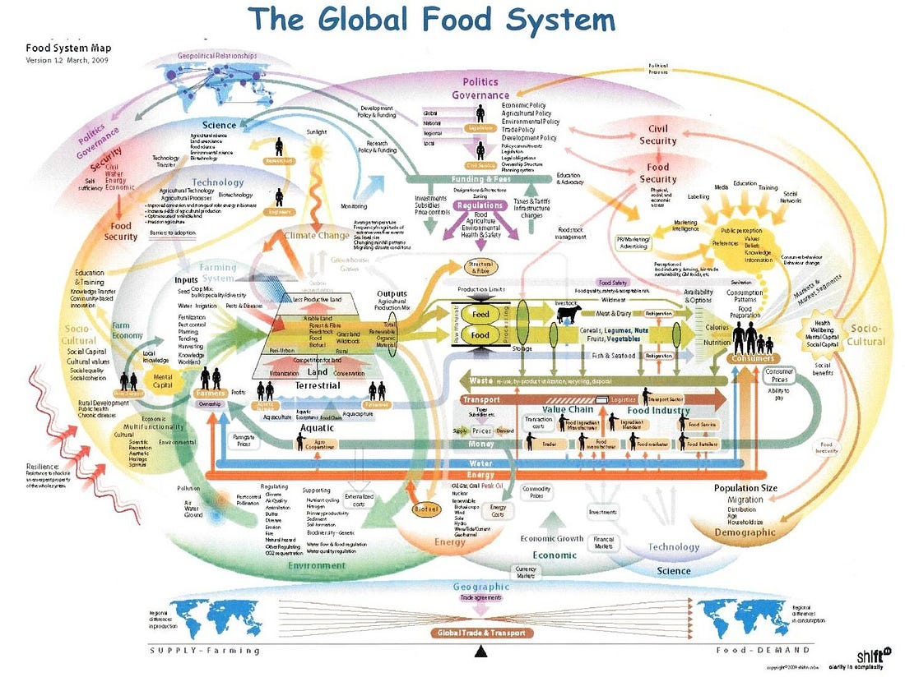

Greehouse and Extra Food Costs Nav:

Shopping and shipping:
Think about how much you buy in a store.
When you shop, what are you normally shopping for? Food!
We go to the store many more times for food then we do for furnature, clothes, dishes, vehicles, insurace, school stuff, etc. Yes some of those things cost more, thats not the point.
What I am saying is that the largest volume of products that gets moved around globally IS food.
In a month, we buy 2-3 meals a day usually for 30 days (hopefully). This = 60-90 meals per person per month. The average meal may be from $3 - $5 which = $270 - $450 per month per person for 3 meals a day.
In that same month you may buy clothes or shoes or a piece of furniture too. However the likely hood that you buy 10 of those items a week is usually not there, when it is it only happens once in a while.
This means that out of what is shipped globally, volume wise, at least 60% of it is food... maybe more.
Food needs unfrozen land to grow:
This is why for us in Canada, much of our food is either grown South or in greenhouses locally.
Its no wonder too. Looking at a ***map we can see that much of Earth's land mass is in the North and that the further North you go the wider and denser the land gets. Unfortunately this also means the colder it gets too.
Since food has the most land to grow on ONLY in places that get cold enough every year to hault major plant production. Without a new approach, we will likely suffer food inflation for years to come.
Out of the land that does grow food year round. South America, South Africa, and South China (our biggest global producers) are either crowded with people, have dense jungles (which should be protected), are too mountainous, or are not very wide from East to West. Although usually it is some combination of the above making it rather difficult to want to rely on that for the long term.
Shipping and inflation:
Something has to give, right? This model of ***product distribution. With ships that burn an incredible 300 tons of fuel every single day.
Please note that
300 tons is equal to 600,000 pounds of fuel
(depending on the ton you use).
That's 600,000 pounds EVERY SINGLE DAY.
For ONE SHIP.
AND these ships typically take 10 - 14 day long trips... one way...
Something to think about:
A ten day journey is at least 6 million pounds of fuel burning... that is 3000 tons.
Again. This is only for one ship.
Furthermore, the 10 largest shipping corporations globally have more than 30,000 ships. Here is a map of worldwide active ships right now.
IMPORTANT -
Even if these 30,000 ships only burn through 100 tons each a day, then on average this still means that 3 million tons are burnt every single day between these 10 largest companies alone.
Unfortunately this is not the case, it is between 200 - 300 tons a day on average per ship of the 10 largest freight liners makong it 6-9 million tons of ***bunker fuel per day are burnt.
There are many more companies before you get to a hundred and there must be more than 100 shipping companies globally.
Where our food ships from:
Places like South Africa (TedTalk-Important), mainland China, South America and here, South USA, produce some of the most demanded products in the world. Mangoes, Pineapples, Oranges and Citrus in general, Coffee, Cinnamon and so much more can only be grown in those regions because to far North or South and you end up experiencing winter.
This is a major contributor to inflation, polution and resources. Reducing cargo shipping is nothing but good for everyone and everything.
Why plants only grow in certain regions:
Why? Because of plant heardiness zones. Plant hardiness zones are growing regions specific to the plant being grown. Plants and Seeds when bought are usualy marked with a number to show this.
Other things that effect our food quality and price:
Fertilizers and pesticides are extra costs. They are surely absorbed by the plants a little bit thus getting into our food and bodies.